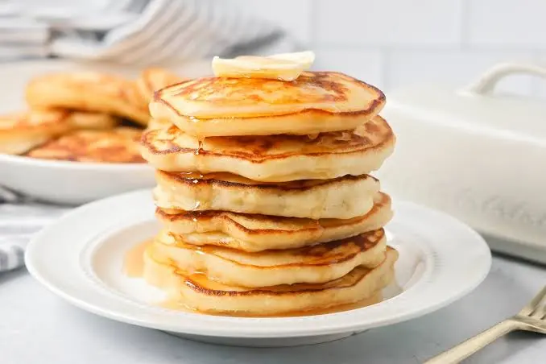

Let the batter rest nice for 30 min(it'll only get better)
Heat a pan until nice and hot, lightly oiled
Pour in a ladle of batter, swirlto coat, let it brown, then flip
Repeat, stack, and enjoy
PANCAKE
INDREDIENTS
2 eggs
150 ml semi- skimmed milk
1 sachet vanilla or 1 tsp vanilla extract
125 g flour
1 stp baking power or baking soda
2 tbsp sugar
1 pinch of salt
butter or oil for cooking

PREPARATION
ina large bowl, mix the dry ingredients : flour, baking powder, sugar, a pinchof salt, and a sacher of vanilla sugar
in another, mix the 2 egg yolks wilh th milk,then add to the dry ingreients while stirring-you should get a thick crepe-batter-like texture.Let it rest 15 to 30 min
Whisk the egg whites until stiff and gently fold them into the batter(this is the secret to ultra-fluffy pancakes)
Cook in a small,well-buttered,hot pan for 1 minute one each side
The edge should turn golden, and small bubbles should form on top-that's the cue to flip the pancake
Spaghetti with bolognesse sauce
INDREDIENTS
Ground bee: 600g
Peeled tomatoes(800g can):1 can
Onion: 2
Garlic: 2 cloves
Olive oil: 2 tdsp
Oregano: 1 tbsp
Basil: leaves
Sugar: 2lumps
cayenne pepper
salt
Ground pepper
Spaghetti: 400g
PREPARATION
Inpot,heat the olive oil and add the chopped onions.Cook over low heat until translucent. Add the chopped galrlic at the end, just long enough to lightly brown it without burning
Add the tomatoes to the pot and bring to medium-high heat.Simmer for 20 minutes, adding the oregano, bbasil, salt, pepper, cayenne pepper, and sugar to taste
Lower the heat and stir to reduce the sauce.Set aside
Cook the meat in a pan after seasoning it.Be sure to drain off the meat juices
.jpeg)
.jpeg)